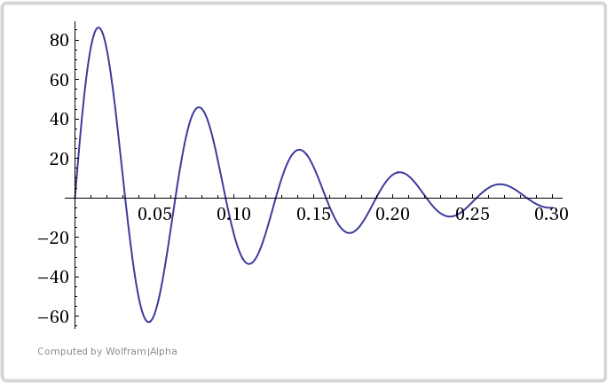
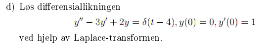
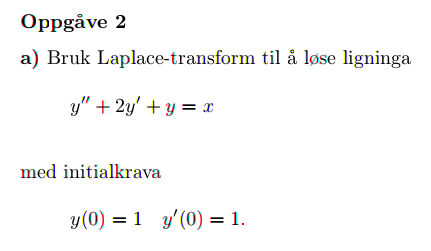

MAT106 for ELK og KOM
Uke 10
16.03.2016
Alexander Lundervold
institutt for data- og realfag
Trykk SPACE for å gå fremover, ESC for oversikt over slides
På mobil? Swipe
Sist uke
Laplacetransformasjonen
- Definisjon
- Eksempler
- Motivasjon: løse differensiallikninger
- Den inverse laplacetransformasjonen
Denne uken
Mer om laplacetransformasjonen
- Eksempel: Impulsfunksjonen
- Invers laplace og delbrøkoppspalting
- Laplacetransformasjonen og differensiallikninger
- Laplacetransformasjonen og elektriske kretser
\[\mathcal{L}\big(f(t)\big) = \int_0^{\infty} f(t) e^{-st} \mbox{dt}\]
Transformerer funksjoner fra tidsdomenet ($t$-domenet) til frekvensdomenet ($s$-domenet)
\[\mathcal{L}^{-1}\big(F(s)\big) = f(t)\]
Transformerer fra frekvensdomenet til tidsdomenet.
Vi finner invers laplace ved å bruke tabell. Ofte nødvendig å manipulere på uttrykket $F(s)$ først. Typisk ved hjelp av delbrøkoppspalting
Den laplacetransformerte til $f'(t)$ er bestemt av laplacetransformerte til $f(t)$:
\[\mathcal{L}\big(f'(t)\big) = s\mathcal{L}\big(f(t)\big) - f(0)\]
Har også at
\[\mathcal{L}\big(f''(t)\big) = s^2\mathcal{L}\big(f(t)\big) - sf(0) - f'(0)\]
og
\[\mathcal{L}\left(\int_0^t f(x) \mbox{dx}\right) = \frac1s \mathcal{L}\big(f(t)\big)\]
Transformerer
derivasjon til multiplikasjon
integrasjon til divisjon
SÅ: differensiallikninger til algebraiske likninger
Nå
- Laplace og differensiallikninger
- Invers laplace og delbrøkoppspalting
- Impulsfunksjonen $\delta(t)$
Deretter
- Litt om laplace og elektriske kretser
- Noen eksamensoppgaver
$v(t) = 100.5 \,e^{-10t} \sin 99.5t$

Fra eksamen FOA161, H2009, Oppgave 2

Fra eksamen MAT106, H2013, Oppgave 2

Studieuken
noen tips
Sett av tid til repetisjon!
MAT106x
- En betaversjon av et støttekurs på nett (snublegruppe)
- Innloggingsinfo er sendt via itsLearning-melding (lukket beta; krever invitasjon)
- Mer innhold blir lagt til etterhvert
{kind=link}